In the summer of 2006, GEWA created overflow parking for the Rec Center by expanding the GTC back parking lot, doubling the width of the back road and the number of parking spaces. That also meant enclosing the GTC courts within the Rec Center fence. During big Rec Center events, GTC member's access will be through the Good Luck Road gate, instead of the main campus.
In October 2006, GSFC re-routed Soil Conservation Road around the north side of the Rec Center. That opened access to the courts from the main campus without security gates.
In August 2006, the GTC hard courts were resurfaced by All Pro Courts Inc. for $7000. Nonetheless, the ground beneath the hard courts continues to shift, opening cracks in the surface. Fortunately, they have not yet seriously affected play or safety.
In 2007, the Rec Center paved the back road and parking lot.
That created a dismal swamp with no drainage in the area south of the clay courts.
This drowned dozens of mature oak trees that had provided excellent shade in the summer.
In July 2008, the Rec Center re-installed the drain pipe that had been under the road to the south of the swamp, alleviating the drainage problem.
Unfortunately, the big old oaks continue to die of rot.
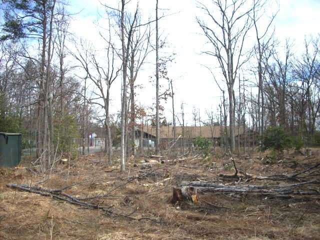
View of GTC's Dismal Swamp in February 2011.
It is a 3-wheeled golf cart that has been modified to pull a roller and/or drag brush. It takes about 30 minutes to drag and roll all 8 of GTC's HarTru courts with the cart. The cart should not be used when the courts are muddy or have standing water on them. Early in the spring, the cart should be used only to roll the courts, since the drag brush will pull the old lines up before their nails have re-set in the clay.
The cart is powered by six ordinary 6-volt wet lead-acid batteries wired in series to power a 36-volt motor. The batteries are trickle-charged from a standard 110-volt A/C socket through an on-board transformer. Replacement batteries cost about $80 each, and must be replaced every 5 years or so. The batteries were last replaced in 2008, and half of the corroding wires in 2010. The batteries are located beneath the seat of the cart. The batteries need to be topped-up with distilled water every year.
The cart's tires are fat tubeless construction, pressurized at 24 pounds per square inch. We use a small electric air pump to maintain pressure. At this writing (2011), the front tire has a slow leak, and must be topped up every month or two.
The Har-Tru brand is currently owned by Lee Tennis of Charlottesville VA, who have good on-line support.
HarTru requires maintenance -- daily water to keep the surface compact, plus annual resurfacing to replace the dust that erodes away in the wind and rain.
The courts are kept level by having the Club players hand-drag the courts every match. The surface is compacted using the electric cart to roll and drag them at least one per week during the playing season.
The court surface is kept damp by programming an automatic sprinkler system to wet them to the point of puddles every day.
In the case of the GTC courts, which are fairly well sheltered, the application of 20 to 25 50-pound bags (a half-ton+) of fresh HarTru every spring has kept the courts functioning.
By mid-season, it helps to dump and spread 3 to 5 more 50-pound bags into the "bird bath" depressions behind the center baselines, where players kick the clay away.
Salt (magnesium chloride) can be added to the courts to improve dusty conditions, typically in the high-traffic area just behind the baseline.
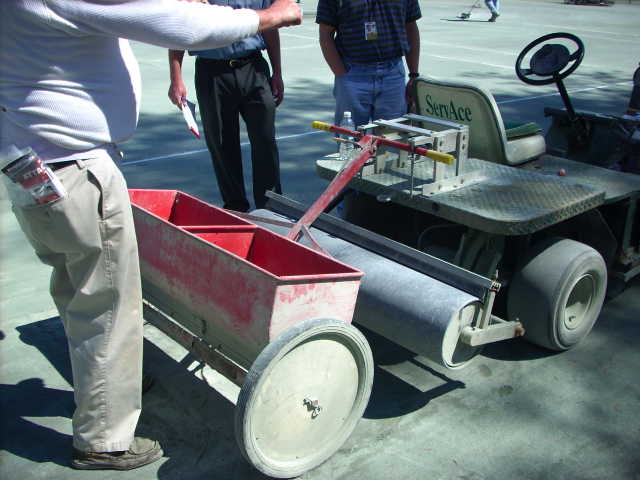
We have a cagelike bracket to attach a drop-spreader to the cart, in order to resurface the HarTru courts each spring.
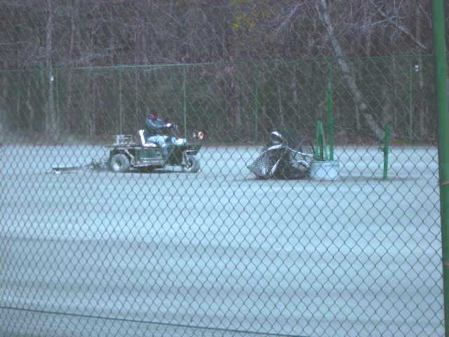
After dribbling the fresh HarTru onto the courts, it must be smoothed before the first watering, or there will be lumpy areas.
The GTC purchases its HarTru from HT Tennis in Hagerstown MD, who delivers directly to courtside. The Club usually buys 8 tons of HarTru in the spring, applies 4 tons, and stores the remaining 4 tons in the blockhouse for next year's application.
It takes 2 men 2 days to resurface GTC's 8 clay courts. The application is bone-dry dust, which must be promptly watered or rained on, to avoid having it blow away.
Since dust blows away more easily than sand, the courts gradually become sandier over the years. Every few years, the sand has to be scraped off the surface, when dunes start to appear, creating soft spots.
Damp HarTru is an attractive seed-bed for weeds and algae. Tall weeds growing near the fences are killed using herbicide (RoundUp) and/or a hoe. Tiny "carpet weeds" and grass on the courts are more difficult to kill, requiring large amounts of herbicide and/or manual surface scraping. The Club has a 5-gallon dispenser on wheels that is used to manually apply herbicide. Attempts to control weeds with chlorine bleach or magnesium chloride salt have not been effective.
As the clay courts age, they become more level, and puddles stand at the low (north) end, making algae ponds in the rainy season. When the surface finally dries, the algae form a slippery, broken crust that must be scraped off and dumped.
The south path along the courts is a good dumping ground for sand and algae crust.
No resurfacing was done in 2010, due to the triple lack of GEWA funding, a springtime water supply, and manpower.
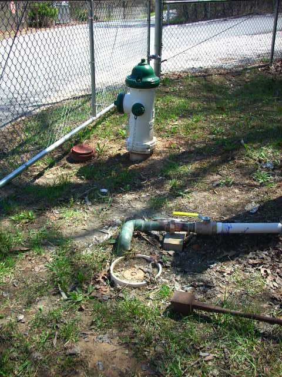
Water is supplied from the base of the fire hydrant at the turn-off into the Club parking lots.
The water is piped up the wooded hill to the back (north) side of the HarTru fencing, behind court 2.
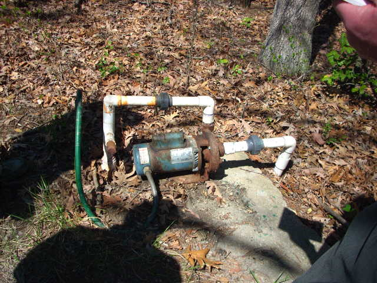
There, water passes through a booster pump to provide sufficient pressure to cover the courts.
The pump is normally sheltered by a simple wooden "doghouse".
The pressurized water moves through a "backbone" plastic pipe buried outside the north fence. This backbone pipe is tapped by 5 pipes leading to each of 5 "zones" inside the court fence. Each zone has 4 to 6 small perimeter sprinklers and a large central sprinkler.
Normally, all zones are "off", kept from being watered by spring-loaded valves buried in plastic boxes behind the north fence, at the point where the zone taps into the backbone pipe.
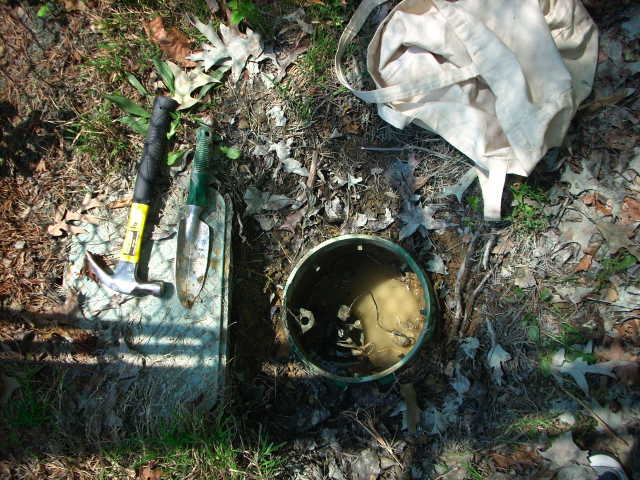
The plastic boxes for zone 4 (closed green rectangle, under tools) and zone 5 (open flooded cylinder), housing sprinkler valves behind court 8.
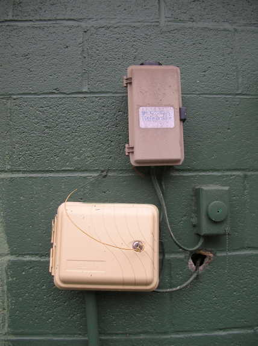
The pump and zone-valves are controlled electrically by a box mounted on the north wall of the GTC blockhouse.
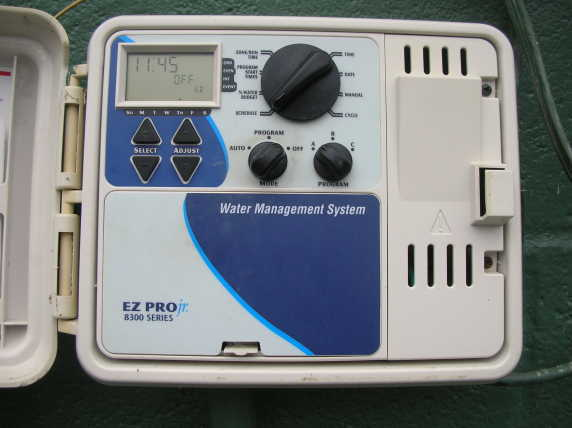
The box contains a small programmable computer that turns on the booster pump and opens the zone-valves, one-at-a-time.
The box is a typical controller for an automatic lawn sprinkler system, "EZ Pro Jr., Model 8300". The description and programming of the complicated device is in the manufacturer's documentation.
During the playing season, the controller is programmed to water the courts for 5 to 15 minutes each, with the longer times in the heat of the summer.
To shut down the system for the winter, the central rotating switch in the controller is set to "OFF", and an electrical relay-block is pulled from a box mounted on the fence by the pump, and the pipes are blown out.
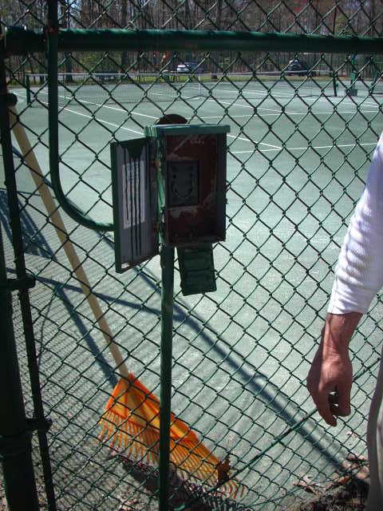
Relay-block box on the fence behind court 2.
The automated controller has an internal clock that is maintained by a AA battery that should be replaced each year.
The white plastic pipes are the usual glue-together commonly found in sprinkler systems. Unfortunately, there are few breaks in the system every year, often under ground.
The small sprinklers beside the fences are cheap screw-in plastic units, although a few expensive brass units still survive.
Once shut off, the pipes are blown out using an air compressor stored in the blockhouse.
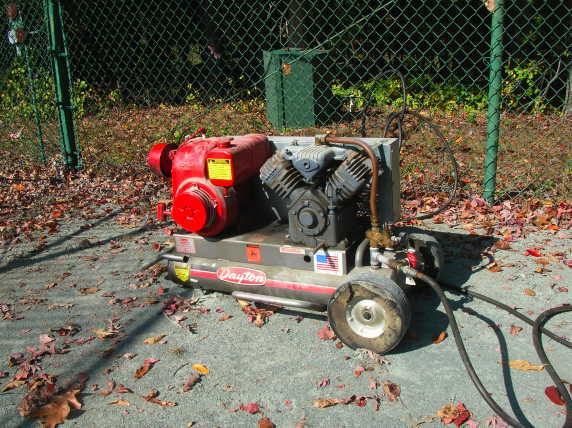
The model is a Kohler K181 gas-powered engine with an oil sump.
The engine is hard-to-start, so either dip the spark plug in gasoline or spray starter fluid into the carburator while playing with the choke with the air filter off.
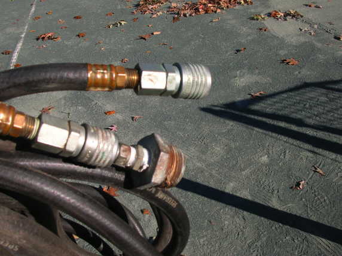
Attach the air hose to the pump and then to the drinking fountains or sprinklers with appropriate screw-on flanges.
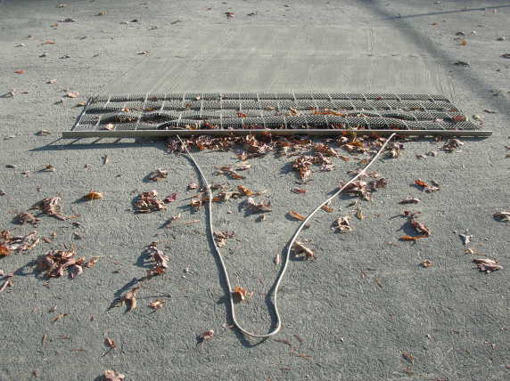
The Club has 6-foot wide drag-rakes with a spiky plastic mat to quickly pull detritus to the fence.
It takes a few man-days to clear the courts in the autumn, and a few man-hours to clear the pine needles and the sticky sweet gum seed balls in the spring.
At GTC, the plastic lines last for years, even at the baselines.
Many nails, however, become loose in the ground every year, and must be either supplemented with additional nails, or pulled out one-by-one, and re-nailed nearby -- all without removing the original plastic line.
Lines that have become significantly higher or lower than the surrounding clay can be simply pried up a bit, have the dirt underneath leveled with a putty knife, and pressed back down.
Spools of new tape and buckets of nails are kept in the Club blockhouse.
A new tape is installed by nailing one end into the ground beyond one end-point, and then stretching the tape over the other end-point, again nailing it into the ground beyond the second endpoint. The tension can be provided by one person sitting on the ground, pulling the tape with pliers. The taut tape in between is then nailed by dividing the length in half, over-and-over, to keep the total line straight. (Nailing from one end to the other typically creates puckers and meanders along the length.) The slack strips beyond the endpoints are then pried up and cut off.
To help one man to grab, stretch, and nail a new line in place, the Club has a simple home-made hinged device kept in the rafters of the blockhouse.
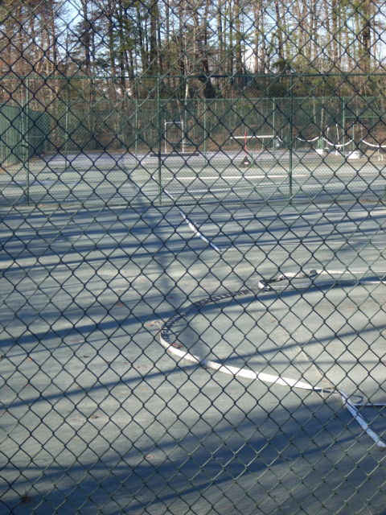
By the end of winter, the nails would be completely out of the ground, and the lines flopped over, useless.
To deal with this, the lines must be walked down every few months, especially in late December and late February.
In mid-winter, the lines reflect sunlight and maintain a "rail" of ice under the line. Meanwhile, the surrounding dark clay surface-melts, making a soup of mud on top of a hidden layer of ice. Walking on clay courts in this condition is a disaster for the pedestrian and the courts.
Heel-to-toe walking on the lines is slow and tiresome.
The job is easier by laying a board over the line and walking on that.
An 8-foot long 1"x8" plank is used to flatten the line to the ground, and push the nail heads level.
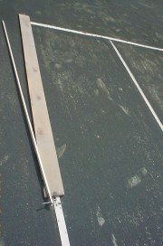
<===>
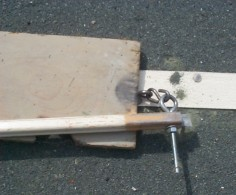
To move the board without bending over, attach an 8-foot rod (1"x1" square channel, normally used for electrical wiring) with an S-hook and eyelets.
Walk the board, step off, push the board forward 8 feet with the rod, and walk it again. That is about 4 times faster and a lot neater than heel-to-toe walking. The lines on 8 clay courts can be walked down in about 2 hours, using the board.
The net posts on the HarTru courts need replacement every 20 to 30 years, as the salt in the HarTru corrodes away the base of the post, and the post snaps off. Rather than dig up the massive post foundation, a narrower diameter pipe can be slipped inside the original post's upper and lower sections.
The long tubes and ballasts require replacements every few years. The replacements are done by GTC volunteers who like to play after dark in the spring and fall.
Spare bulbs and ballasts are kept in the Club blockhouse. Scaffolding is kept in the Club's plywood shed.
The GTC HarTru courts were badly trenched by the sprinklers over the weekend of August 3-4, 2002. Saturday's afternoon thunderstorm apparently turned them on, since the valves are electrically operated by a small computer. The sprinklers ran all night, cutting deep into the already rain-soaked courts.
Thanks to hard work by our grounds keeper, Larry Waters (plus his son-in-law and grandson), all the clay courts were open by August 8. Courts 1-5 were resurfaced. Soaking rains at the end of August converted the dust into clay, but the drought of 2002 continued, leaving them soft and lumpy.
This same problem had happened to court #1 in the late 1990's, when a thunderstorm turned on those sprinklers. It took several months and lots of hand-leveling before the bad spots went away.
After the winter of 2002-2003, many of the sprinkler-dug tenches remained soft. In the spring of 2003, they were dug up and replaced with fresh HarTru.
Finally, in 2004, the HarTru courts returned to normal, aided by a rainy year beginning in late summer 2003.
Click here for a map of the soft spots.
{kind=link}